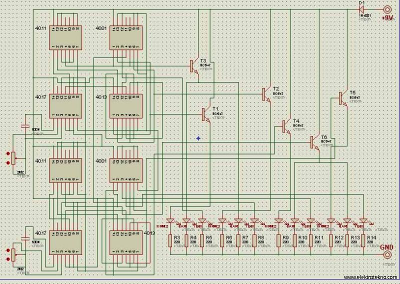
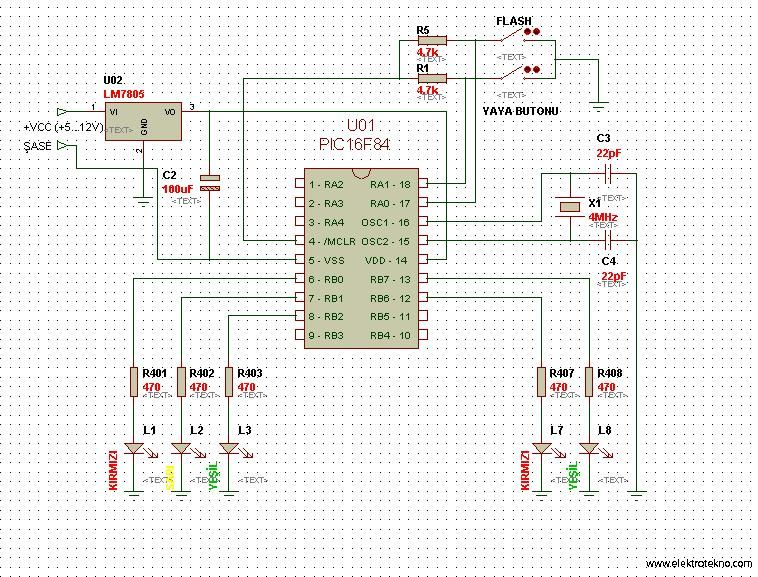

· EEM211
EEM211 Digital Logic Design: Traffic Light Circuit Diagrams (with CMOS ICs and with PIC16F84, elektrotekno.com)
EEM211 – Sayısal Mantık Tasarımı · 01.12.2007 · 16.10.2026
This post presents two circuit diagrams found in a term project folder named "TRAFİK IŞIĞI" (Traffic Light) in the EEM211 Digital Logic Design course folder. The diagrams were drawn in Proteus and taken from the website www.elektrotekno.com (the site's address is written in the corner of the diagrams). The same folder also contains the Proteus drawing (ISIS) and printed circuit board (ARES) files for this project; these were not included in the download. Both diagrams can be downloaded as a ZIP at the end of the post.
Note: This content belongs to a third-party source; it is shared for archival and nostalgic purposes with the source credited. It will be removed at the request of the rights holder.
Traffic light with CMOS ICs
The first diagram is a traffic light built solely from CMOS logic ICs: two 4011 (quad 2-input NAND), two 4001 (quad 2-input NOR), two 4017 (decade counter/decoder) and two 4013 (dual D flip-flop). The clock signals come from RC oscillators built with the 2.2 MΩ adjustable resistors and 100 nF capacitors next to the 4017s; the timings can be adjusted with potentiometers. The logic outputs drive the red, yellow and green LED groups through six BC547 transistors; each LED has a 220 Ω series resistor. The circuit is powered from +9 V through a 1N4001 diode.

Traffic light with PIC16F84
In the second diagram, the lights are controlled by a PIC16F84 microcontroller:
- Power supply: +5…12 V input, regulated to 5 V by an LM7805 regulator and a 100 µF capacitor.
- Clock: a 4 MHz crystal (X1) and two 22 pF capacitors (OSC1, OSC2).
- Inputs: two buttons with 4.7 kΩ pull-up resistors on RA0 and RA1, FLASH (flasher mode) and PEDESTRIAN BUTTON.
- Outputs: RB0–RB2 vehicle lights (red, yellow, green), RB6–RB7 pedestrian lights (red, green); each LED is connected through a 470 Ω resistor.
